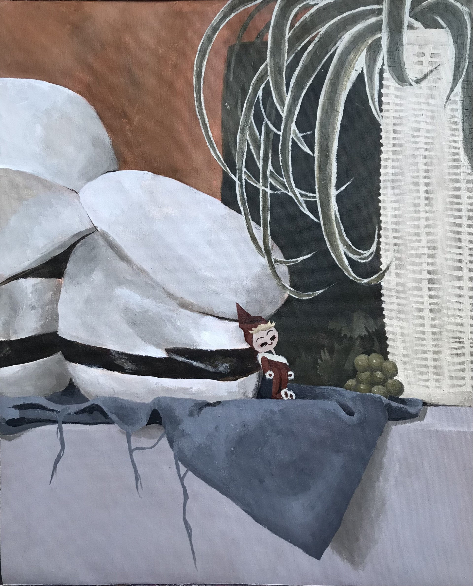
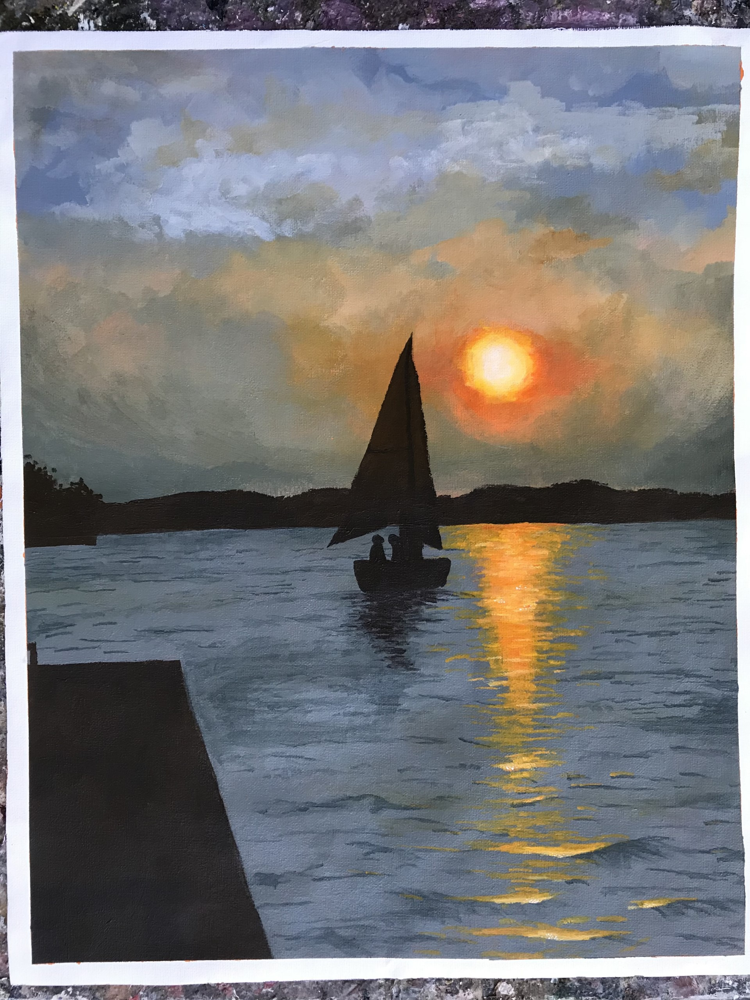
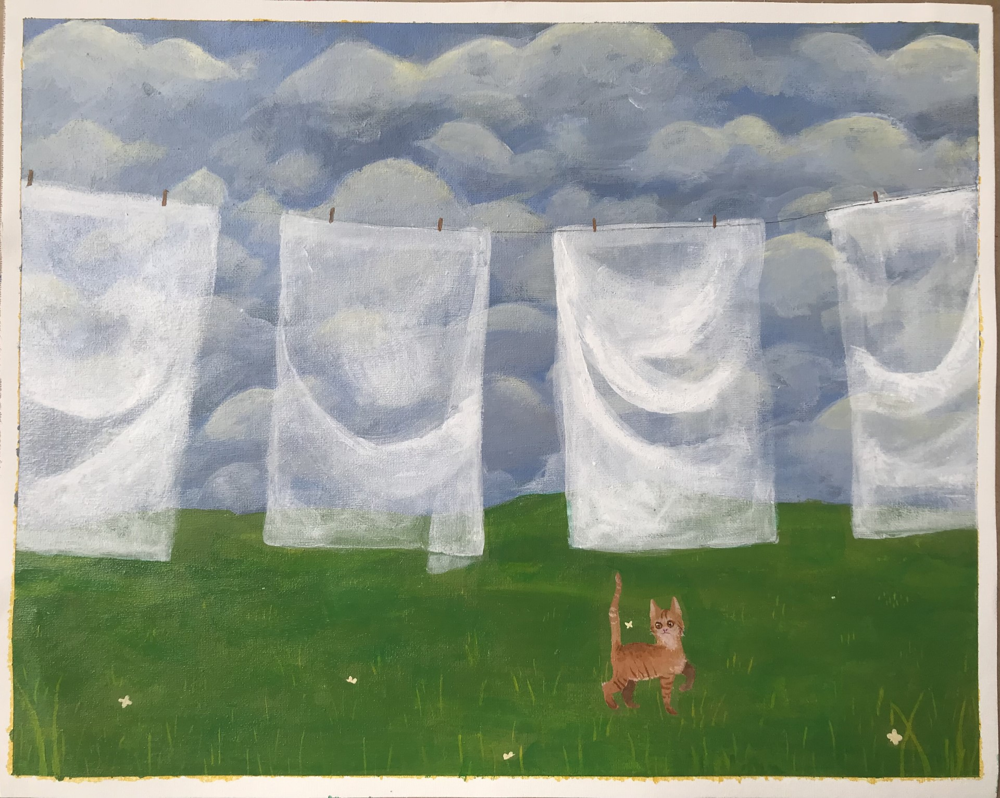

Paintings is a relaxing and satisfying form of art. I've found that the best practice is to be loose with your strokes and unafraid to make mistakes. When using acrylic paint like I did for the paintings below, mistakes can be covered up!
  